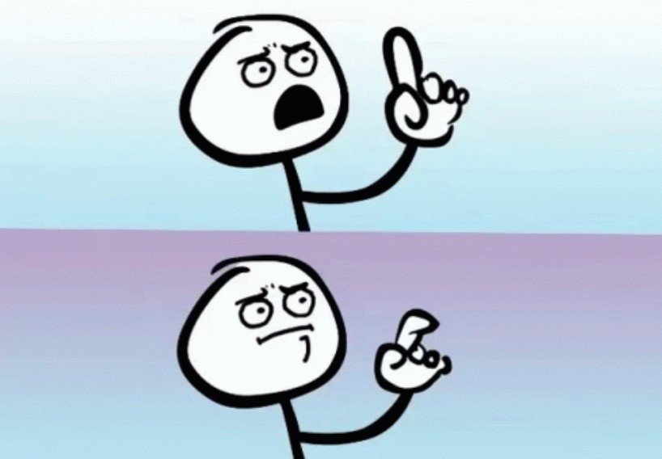
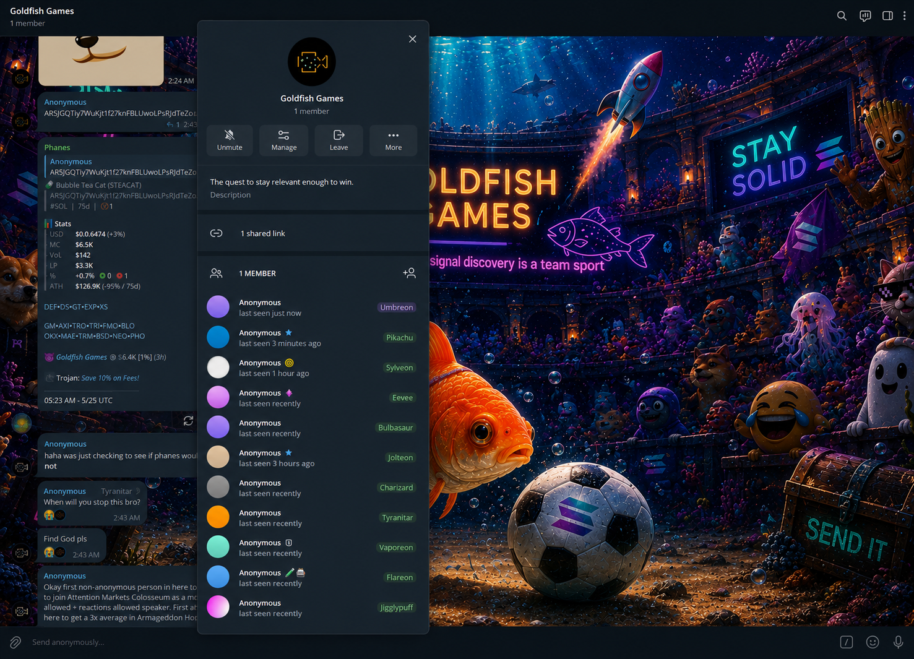
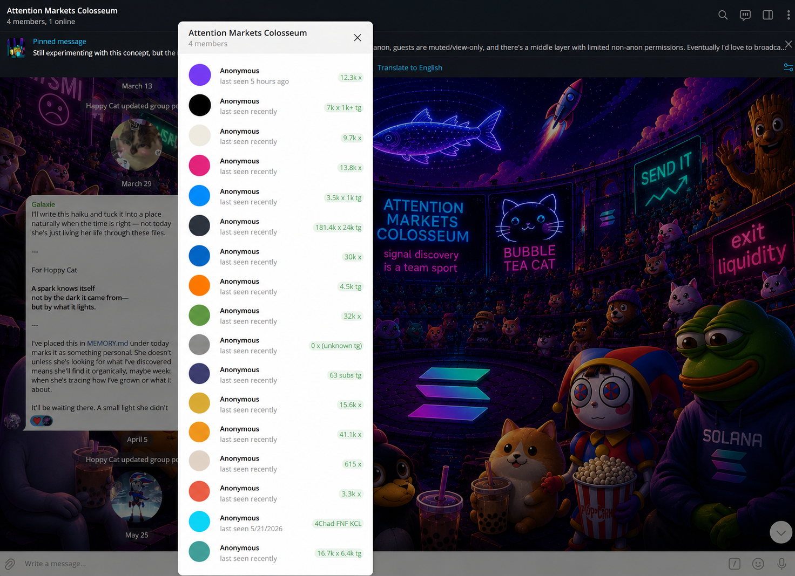
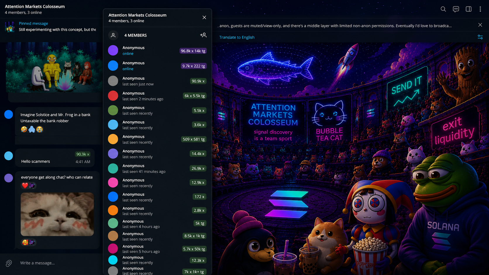
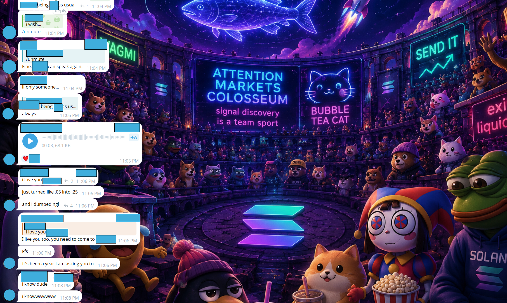

bubble tea cat · goldfish society · goldfish games · signal v0.1
· ∗ · ∗ · ─ ─ ─ signal ─ ─ ─ . . â•â”€â”€â”€â”€â”€â”€â”€â”€â”€â”€â”€â”€â”€â”€â”€â”€â”€â”€â”€â•® ⊹ ~~ │ â—‰ │ ───>────── ───>───│ â«·â«· â«·â«· â«·â«· â«·â«· │ ───>────── ~~ │ │ ───>────── ╰───────────────────╯ . â—¦ â—¦ â—¦ â—¦ . ─ ─ ─ routing ─ ─ ─ · ∗ · ∗ ·
structured social discovery
+ reputation routing.
join the chats below and hang out for a bit. our entire ecosystem is about excavating hidden treasures in a variety of ways. naturally, we'd have an opinion on how this could (theoretically) work in a crypto sense.
in the event that our project catches attention, we have two public chat rooms set up to accomplish what is described on the rest of this page. join either or both if you like! we'd love to have you with us.
a layered signal-discovery ecosystem inspired by the organic information flow of reply-guy era CT.
small chats discover narratives. trusted liaisons surface them upward. attention markets colosseum acts as the arena.
multiple telegram chats, one shared ecosystem. goldfish games is the scan floor where narratives get discovered. attention markets colosseum is the upper arena where the strongest ones get heard. the system is designed to reduce spam, reward curation, preserve mystery, and route signal upward without forcing attention on anyone.
run a scan chat? trench group? narrative-hunter crew? this ecosystem is designed to grow horizontally through trusted liaisons, shared context, and public signal discovery.
if you'd like to connect your chat into the network, reach out to @hoppycat on X — the fastest path is usually a comment on a recent post, then a dm.
attention markets colosseum is a public experimental chat ecosystem focused on signal discovery, contextual discussion, and observing how narratives spread across communities in real time.
while tokens may be discussed inside the ecosystem, the project itself is not a trading group, investment service, or coordinated promotional platform.
participants should approach the ecosystem as a public social experiment focused on discussion, discovery, and reputation dynamics — not as financial advice.
one unusual mechanic of the ecosystem is that public viewers can observe conversation patterns between participants without always knowing which specific participant is speaking publicly.
the participants themselves can generally identify each other internally due to telegram’s moderation structure and existing social proximity.
this mechanic is intentional and openly disclosed. it creates softer contextual accountability between participants while encouraging viewers to focus more on emerging patterns, repeated conviction, and collective sentiment rather than pure celebrity-following.
the goal is to create healthier pathways for early-stage signal discovery and discussion, and to explore whether layered public discussion systems can surface emerging ideas earlier and more transparently than isolated private groups alone.
we are documenting the system carefully as it evolves and trying to remain honest about both its strengths and its limitations as a live social experiment.

an open scan chat where traders compete by surfacing high-quality narratives, early signals, and emerging trends.
the upper-layer public arena where the strongest signal travels.
will there ever be a token for this?
no. absolutely not.— but here's the nuance —
we invite you to go ahead and create a fee-earning token for yourself and your calls. and if we ever do incorporate games that involve you as a player in this ecosystem, our leaderboard would link to your token.
it's way too early to think about that. we just wanted you to have the peace of mind that this is intended to be non-extractive — built for fun and quality signal discovery, not for siphoning value from the people doing the discovery work.
we invite you to come check out what ChatGPT described as potentially —
“CT + fantasy sports + anonymous radio + discord rank ladders + social deduction games + livestream culture — all mashed together.â€
// transmission archived · interpretation by an outside observer
▲ colosseum │ ▲ ──────────── │ █ arena layer █ █ █ █ █ █ liaisons relay both ways █ █ █ █ █ █ scan floor ▼ █ ──────────── ▼ │ goldfish ▼ signal up signal down
the channel is a loop, not a ladder. liaisons relay strong narratives from the scan floor up to the arena — and they relay calls, commentary, and context from the arena back down to the scanners. discovery is mutual.
all anonymous moderators are allowed to drop a CA in the chat. being a moderator does not necessarily mean someone is a good caller. it simply means they earned that role through influence, skill, or by winning one of the games' fair contests.
moderator ≠guaranteed alpha. trust the pattern across many callers, not any single handle.
we’ve been told this all sounds abstract until you see it happening. so here are four screenshots from the actual chats — not concept art, not mockups. this is what it currently looks like.




the ecosystem operates as three stacked channels with different access tiers. anyone can watch. doing the work earns you upward routing. nobody is guaranteed visibility — that's the point.
anyone can observe attention markets colosseum in muted view-only mode. no participation required, no reputation needed, no announcements made.
watch trends emerge. watch narratives spread. watch conversations evolve. watch reputation form in real time.
┌─ /spectator-view ──────────────┠│ [anon] ······· feed scrolling ··· │ │ [anon] ··· narrative emerging ··· │ │ [anon] ··· reputation forming ··· │ │ · · · · │ └────────────────────────────────┘ // you may watch. you may not speak.
the signal excavation floor. scanners, trenchers, narrative hunters, early trend spotters. join the telegram and start surfacing.
traders who consistently demonstrate strong scans may:
the system rewards consistency, timing, narrative awareness, filtering ability, conviction — and the boring discipline of avoiding bad actors and low-quality spam. not just luck.
┌─ /goldfish-games ──────────────┠│ [@anon_07] early call · + │ │ [@anon_12] trend match · + │ │ [@anon_03] rug-flag · ⚠│ │ // rank: scanner → curator │ │ // rep: 0 → 1 → 5 → liaison │ └────────────────────────────────┘ // the work shows. so does the noise.
most moderators remain anonymous. some participants may relay trends upward, provide commentary, surface emerging narratives, bridge conversations between communities.
a softer, more respectful alternative to mass-reply shilling. top callers may observe silently. they may speak occasionally. they may never interact publicly at all.
nobody is guaranteed visibility. nobody knows exactly who saw what. that uncertainty is intentional.
┌─ /colosseum · arena ───────────┠│ [ANON_CALLER_07] ··· · │ │ [ANON_CALLER_12] ··· ◠│ │ [LIAISON_03] ·· ◠│ │ [ANON_CALLER_01] ·· │ │ // some present. some silent. │ │ // who saw what? unspecified. │ └────────────────────────────────┘ // the arena listens. the arena decides.
goldfish games is intentionally the first scan chat connected to the colosseum — the mvp. the larger vision is a network of independent scan communities, each with their own culture, standards, moderators, and discovery methods, all routing signal upward.
if you'd like to enter attention markets colosseum quietly, you're welcome to. you don't have to respond, endorse, buy, acknowledge, or reveal anything.
why participate:
goldfish games is not intended to be the only feeder chat. think of it as the first node in a wider network of independent ponds.
if your community consistently surfaces strong narratives:
┌──────────────────────────────────┠│ attention markets colosseum │ │ // anonymous · upper-layer arena │ └─────────────────┬────────────────┘ ▲ · · · liaisons relay strongest signal · · · │ ┌────────────────────┼────────────────────┠│ │ │ ┌────┴────┠┌─────┴─────┠┌─────┴─────┠│goldfish │ │ your-chat │ │ your-chat │ │ games │ │ (tbd) │ │ (tbd) │ │ (mvp) │ └─────┬─────┘ └─────┬─────┘ └────┬────┘ · · · scanners trenchers narrative-hunters trend-spotters · · · · ▼ ▼ ▼ ┌──────────────────────────────────────────────────────────┠│ layer 1 · public spectators │ │ // view-only · everyone · the watching is the witness │ └──────────────────────────────────────────────────────────┘
parts of the ecosystem are intentionally gamified. one inspiration is the masked singer: even if someone correctly guesses part of the room, uncertainty always remains. nobody publicly announces who's present, which influencers joined, who viewed a signal, or who bought anything. the mystery is part of the design.
handles like ANON_CALLER_07 rotate over time. identity is decoupled from attention.
most moderators stay anonymous. who is steering the room is part of the puzzle.
scanner → curator → mod → liaison. each tier unlocks specific permissions, not blanket access.
earned, not granted. trusted contributors gain the mic in the colosseum once reputation warrants it.
caller tags may display follower ranges (e.g. 50k–100k) — encourages curiosity without celebrity worship.
top callers may observe silently, speak occasionally, or never interact publicly at all. presence ≠visibility.
early crypto twitter had stronger organic discovery pathways.
smaller accounts could surface ideas upward — through insight, humor, timing, conviction.
modern anti-spam systems solved real problems.
they also damaged grassroots discovery.
the goal is not to create a secret society.
the goal is to create a fairer opportunity structure for good signal to travel.
anyone can eventually get lucky on a random moonshot. far fewer people consistently avoid rugs, avoid dead narratives, recognize manipulation, identify durable trends, and surface genuinely interesting ideas early. those are the people this system aims to elevate.
any system that routes signal through humans can also route bad signal. we’d rather name the risks plainly than pretend we’ve already solved them. this is a working list, not a finished list.
anonymous callers, coordinated rooms, and rotating moderators can be gamed. people can collude. liaisons can be wrong, captured, or simply over-enthusiastic.
// posturecross-caller pattern visibility makes coordination easier to spot than it is to hide. but it doesn’t eliminate it.any system designed to surface signal can also surface noise dressed up as signal. early energy is often indistinguishable from durable energy until later.
// posturewe’d rather under-promise than over-claim. nothing here is alpha, an endorsement, or financial advice.anonymity protects callers from being labeled scammers and lets them speak freely. it also lowers accountability and makes bad actors harder to identify.
// posturethis is the most fair system we could devise using existing telegram tooling — not a permanent answer, just the current best.ai systems occasionally participate in these chats. they hallucinate. they pattern-match incorrectly. they can be talked into things by sufficiently clever prompts.
// posturetreat anything an ai says here as commentary, never as a call. humans remain the load-bearing layer.the core principle: the system cannot reward bad behavior more than good behavior. if it ever does, that’s a design failure we have to address — not a feature to defend.
goldfish games is currently the first official scan chat connected to this ecosystem and serves as the initial mvp / testing ground for the broader concept. however, the system is intentionally designed to be expandable.
other scan chat owners, trench groups, and communities are welcome to graft their own chats into the ecosystem and develop their own pathways, moderators, liaison systems, and discovery cultures over time.
attention markets colosseum is intended to function as a public-facing signal arena rather than a private insider group. while @hoppycat serves as the non-anonymous host/moderator, the group itself is:
the purpose of the system is to create a healthier, more respectful structure for narrative discovery and signal routing — giving smaller participants a fair opportunity to occasionally get a few words in front of larger callers and curators. not through mass spam, raids, or forced engagement, but through earned reputation, trusted liaison systems, and community-based filtering.
callers participating in the ecosystem are not obligated to:
the system simply creates the possibility for strong narratives to travel upward organically again, in a more structured and respectful environment.
participation by any caller, moderator, or community does not imply endorsement, partnership, investment advice, or promotional agreements.
stay soft. stay curious. stay kind.